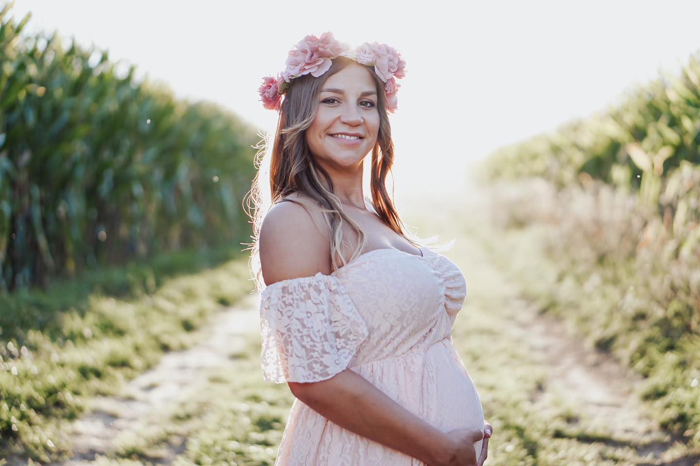

Kontakt aufnehmen
Schreib mir, welches Shooting du dir vorstellst und wann es stattfinden soll. Eine erste Idee reicht, um ins Gespräch zu kommen.
Es gibt Momente, an die du dich erinnern möchtest.
Mit Bildern, die dich dorthin zurückbringen.

Ein besonderer Anlass, ein neuer Lebensabschnitt oder ein Tag mit Menschen, die dir wichtig sind. Was zählt, ist, was dieser Moment für dich bedeutet.
Mit Momenti wird daraus eine Aufnahme, zu der du immer wieder zurückkehren kannst. So, wie du bist. So, wie du dich erinnern möchtest.
Erzähl mir von deiner IdeeSchreib mir, welches Shooting du dir vorstellst und wann es stattfinden soll. Eine erste Idee reicht, um ins Gespräch zu kommen.
Wir besprechen den Ort, den Ablauf und deine Vorstellungen. Gemeinsam finden wir heraus, was zu dir und deinem Anlass passt.
Freu dich auf dein Shooting und auf Fotos, die du gerne wieder ansiehst. Weil sie dich an genau diesen Moment erinnern.
Erzähl mir, was du vorhast.
Den Rest besprechen wir gemeinsam.